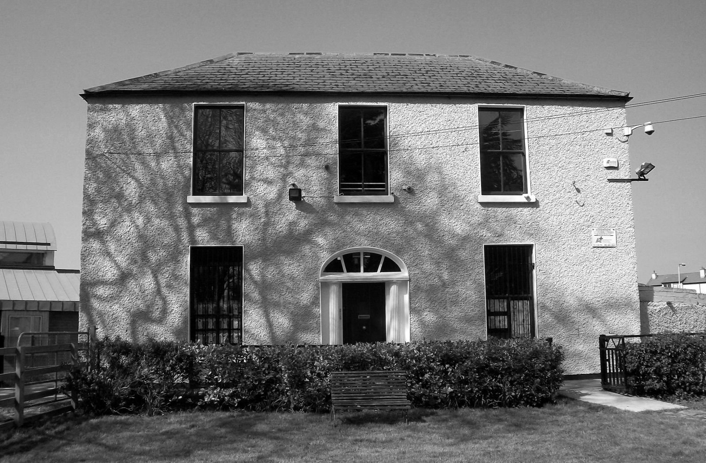
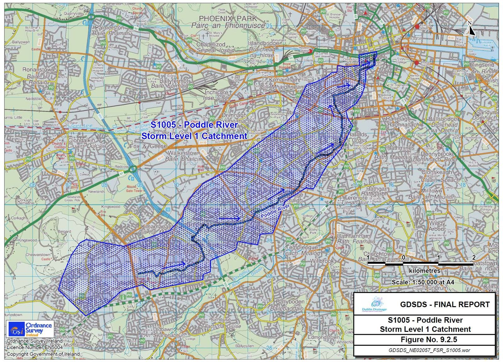

Stop 1 of 16 · Tallaght
Fettercairn House
Where the catchment begins, in the townland of Whitehall.
Fettercairn House
Fettercairn House (renamed St Mark’s House in 1985) appears on the first Ordnance Survey map of Ireland, printed in 1837.
The house stands in the townland of Whitehall in Tamhlacht (Tallaght). It marks the southern edge of the Poddle catchment, where the stream is known as the Tymon Stream.
The catchment
The Greater Dublin Strategic Drainage Study (2005) mapped the Poddle catchment beginning near Fettercairn House in Tallaght and stretching north-east through the city to the Liffey.
Where the river begins
The environmental impact report for the flood scheme says the Poddle rises in the Cookstown area, north of Tallaght village. It flows east through Tymon North, the part of Tymon Park west of the M50, and then under the motorway into the main park.
The report gives the river’s length as about 11.6 km and its catchment as about 16.4 square kilometres. It calls the Poddle a highly urbanised catchment, especially in the middle and lower reaches, where the river is culverted and channelled in sections.
From the planning file
Facts from the flood scheme’s planning application and four local planning files.

